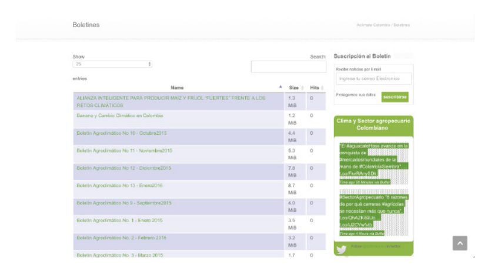
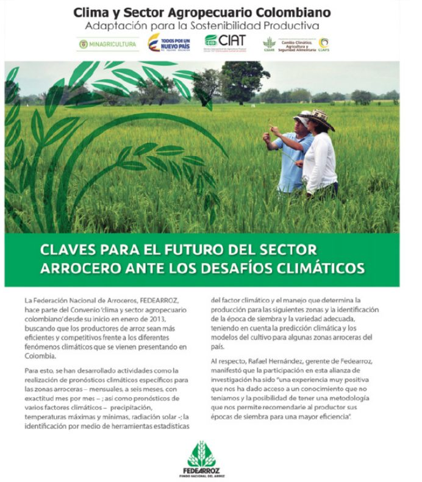
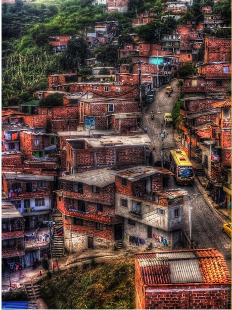
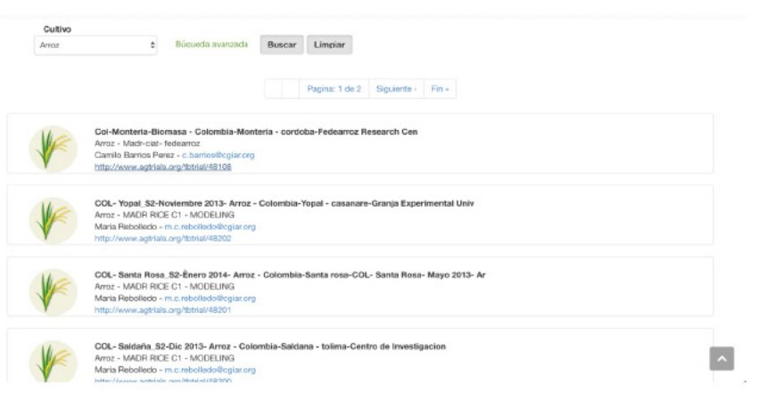

در کلمبیا، مانند بسیاری از کشورهای دیگر، اثرات تغییر آبوهوا بهطور فزایندهای مشهود است.
یکی از بخشهایی که بهشدت آسیبدیده کشاورزی است (کشاورزی، یکی از بخشهایست که به شدت آسیب دیده است). در این بخش، تغییرات پیشبینینشده آبوهوا و دورههای خشکسالی گسترده، ممکن است چالشهای عمدهای را برای مزارع کشور، شاید بهویژه برای مزارع کوچک و مستقل ایجاد کرده است.
پروژه Aclimate Colombia یک مشارکت بینبخشی (میان بخشی) است که توسط مرکز بینالمللی کشاورزی گرمسیری (CIAT)، یک سازمان جامعه مدنی، با گروههای صنعتی بخش خصوصی و نقشآفرینان دولتی هدایت میشود.
این پلتفرم (که در aclimatecolombia.org موجود است) از انواع منابع داده، از جمله بسیاری از مجموعههای داده (مجموعهدادههای) دولتی باز استفاده میکند تا به کشاورزان کمک کند تا نحوه تغییر الگوهای آبوهوایی را بهتر درک کنند. اگرچه Aclimate Colombia هنوز نسبتاً نوپا است، اما تأثیر محسوسی داشته و به رسمیت شناختهشده است. این یک مثال قدرتمند از این است که چگونه به اشتراکگذاری داده در میان بخشها - همراه با استفاده از واسطههای مرتبط با بخش - میتواند دیدگاههای علمی داده سطح بالا را دریافت کند و آنها را به اطلاعات عینی و قابلاجرا تبدیل کند، این فرآیند به کشاورزان کمک میکند تا سطح معیشت خود را ارتقا دهند.
پیشینه و زمینه
تمرکز بر مسئله / زمینه کشور
کشاورزی بخش بسیار مهمی در کلمبیا و بهطورکلی مناطق گرمسیری است. همانطور که Ruben G. Echeverría، مدیرکل مرکز بینالمللی کشاورزی گرمسیری (CIAT) میگوید: «بخشهایی از مناطق استوایی مرطوب پتانسیل تبدیلشدن به سبد نان آینده برای جهان را دارند. در حال حاضر حدود ۷۰ درصد از مردم فقیر دنیا در این مناطق زندگی میکنند و بیشتر تنوع زیستی جهان را در خود جای دادهاند.» بهویژه، کلمبیا امکانات شگرفی را بهعنوان تأمینکننده محصولات کشاورزی مانند قهوه، موز و برنج در اختیار دارد.
بااینحال، برای دستیابی کشورهایی مانند کلمبیا به پتانسیل خود، آنها باید قادر به سازگاری با اثرات تغییر آبوهوا باشند. ازآنجاکه فرآیندهای سنتی کاشت در نتیجه الگوهای آبوهوایی جدید دچار تحول شدهاند، گرم شدن جهانی هوای کرهزمین، چالشهای بسیاری را برای رشد بالقوه مواد غذایی در کلمبیا به وجود آورده است. این طرح چالشی جدی برای کشاورزان کوچکی است که بخش بزرگی از تولیدکنندگان محصول در کشور را تشکیل میدهند. همانطور که اچوریا خاطرنشان میکند: «تغییرات آبوهوایی تهدیدی جدی برای این کشاورزان کوچک است که در حال حاضر با چالشهای مهمی از سوی خاکهای فقیر، الگوهای بارش ناپایدار، فقدان دانش در مورد بهترین شیوههای کاشت، و عدم سرمایهگذاری در فنآوریهای جدید - که میتوانند به آنها کمک کنند - مواجه هستند.»
مثال برنج روشنگر است. برنج برای بخش کشاورزی کلمبیا از اهمیت ویژهای برخوردار است و منبع اصلی درآمد مزارع کوچک و غذای اصلی بیشتر جمعیت، بهویژه جوامع کمدرآمد است. بخش کشاورزی این کشور در سال ۲۰۱۴ حدود ۱.۷ میلیون تن برنج شالیکاری تولید کرد که حدود ۶۵ درصد آن از طریق آبیاری زمینهای پست و ۳۵ درصد آن از آبیاری دیمی تولید شد. بااینحال، سالهای اخیر برای بخش برنج کشور دشوار بوده است. با کاهش محصول از ۶ تن در هکتار به ۵ تن در هکتار، یک دهه افزایش عملکرد برنج آبی بین سالهای ۲۰۰۷ و ۲۰۱۲ از بین رفت. اگرچه توضیحات متفاوت هستند، اما تغییر آبوهوا بهعنوان علت احتمالی این کاهش دیده میشود. همانطور که مشارکت تحقیقات جهانی، گروه مشورتی تحقیقات کشاورزی بینالمللی (CGIAR) میگوید، «تغییرات جزئی در بارش باران و تغییرات آبوهوایی بسیار شدید، برنجکاران را مجبور میکند تا فرضیات قدیمی در مورد زمان، مکان و چگونگی کاشت را کنار بگذارند.»
دادههای باز در کلمبیا
از برخی جهات، وضعیت داده باز در کلمبیا بسیار دلگرمکننده است. بهعنوانمثال، در شاخص داده باز ۲۰۱۵، ارزیابی در دسترس بودن داده در چندین بخش که توسط سازمان بینالمللی دانش باز در کنار هم قرار داده شدند، این کشور رتبه چهارم از ۱۲ را در سال ۲۰۱۴ به خود اختصاص داد. این رتبهبندی احتمالاً بازتابی از در دسترس عموم بودن داده مربوط به آمار ملی، مناقصات خریدوفروش، مجموعه دادههای مکانی و نتایج انتخابات است. بااینحال، علیرغم عملکرد خوب کشور در چنین معیارهایی، تحقیقات و مصاحبههای ما با نقشآفرینان کلیدی، چندین نقص باقیمانده را نشان میدهد. اگرچه این کاستیها در بسیاری از کشورهایی که داده باز را تجربه کردهاند وجود دارد، اما درک آنها برای ارزیابی اکوسیستم داده باز کلی مهم است.
یکی از مشکلات قابلتوجه ناشی از این حقیقت ناشی میشود که تأمین داده باز کلمبیا پراکنده است و در مورد مکان و نحوه دسترسی به مفیدترین مجموعه داده، شفافیت کمی وجود دارد. از آگوست ۲۰۱۶، پورتال داده باز رسمی دولت، داتاکوس ابیرتوس کلمبیا (datos.gov.co)، حدود ۲، ۴۶۰ مجموعه داده و ۷۰ تصویر را در خود جای داده است. یک پورتال داده دیگر به نام کیوداتو (ciudatos.com) توسط بنیاد کورونا در سال ۲۰۱۵ با همکاری دیگر نقشآفرینان جامعه مدنی و تأمینکنندگان مالی در سراسر منطقه تأسیس شد. این پورتال حاوی مجموعه دادههای عمومی متمرکز بر شهر و دادههایی است که از نظرسنجیهای ادراک انجامشده توسط Red Colombiana de Ciudades Como Vamos، شبکه شبکههای سطح شهر در کلمبیا که به بهبود زندگی شهری اختصاص دارد، انجام شده است.
وجود این دو پورتال، درحالیکه نشانهای از حرکت قوی دادهی باز است، منجر به یک تقسیمبندی خاص نیز میشود. برای مثال، کاربران ممکن است مطمئن نباشند که کجا به دنبال داده بگردند، و ممکن است در ترکیب اطلاعات ذخیرهشده در دو مکان برای تجزیهوتحلیل بیشتر مشکل داشته باشند. مسئله پیچیدهتر این است که پورتال دانش تغییرات آبوهوایی بانک جهانی، که میزبان تعدادی از مجموعه دادههای باز کلمبیا است، عمدتاً در مورد دما و بارش باران میباشد.
کلمبیا در اصل علاقه خود را برای پیوستن به مشارکت حاکمیتی باز (OGP) در سال ۲۰۱۱ ابراز کرد. بسیاری از تعهدات OGP آن - و شاید در نتیجه، نوآوری بیشتر دولت و کار کلیتر بر دادهها - بر مبارزه با فساد متمرکز شده است. این امر به ضعف بیشتر در فضای داده باز اشاره میکند – با وجود در دسترس بودن دادهها برای همه، تأثیر نسبتاً کمی بر مسائلی مانند توسعه اقتصادی یا تسریع کارآفرینی و کسبوکار داشته است. بهطورکلی، فقدان انگیزه برای کاربران در جامعه کسبوکار برای دسترسی و استفاده از داده باز منجر به حداقل تقاضا برای داده باز شده است.
فعالان کلیدی
ارائهدهندگان دادههای کلیدی
دولت کلمبیا
نقشآفرین اصلی دولت که پروژه Aclimate Colombia را پیش میراند، وزارت کشاورزی و توسعه روستایی (MARD) است. مأموریت وزارت کشاورزی و توسعه روستایی «تدوین، هماهنگی و ارزیابی سیاستهایی است که توسعه رقابتی، عادلانه و پایدار جنگلداری، شیلات و توسعه روستایی فرایندهای کشاورزی، معیارهای تمرکززدایی، مشاوره و مشارکت را ارتقا میدهد تا به بهبود سطح و کیفیت زندگی جمعیت کلمبیا کمک کند.»
دانیل جیمنز، سرپرست پروژه CIAT، اشاره میکند که دولت کلمبیا، و بهویژه وزارت کشاورزی، تأمینکنندگان اصلی این پروژه بودند و به تسهیل ارتباط میان CIAT و نقشآفرینان مهم در بخش کشاورزی کمک کردند و CIAT را قادر ساختند تا به مجموعه دادههایی که توسط ذینفعان سایر بخشها نگهداری میشوند، دسترسی داشته باشد و آنها را تحلیل کند.
درحالیکه MARD مهمترین همکار دولتی در این پروژه است، ارائهدهنده اولیه داده دولت، موسسه ملی مطالعات آبوهوایی، هواشناسی و محیطزیست (IDEAM) است که دادههای آبوهوایی را جمعآوری و - در نتیجه قوانین اخیر - برای کشور باز میکند.
کاربران و واسطههای داده کلیدی
CIAT
نقشآفرین اصلی در توسعه Aclimate Colombia، مرکز بینالمللی کشاورزی گرمسیری (CIAT) است، «یک موسسه تحقیقاتی کشاورزی، غیرانتفاعی، با تمرکز بر تولید راهحلهای علمی برای مبارزه با گرسنگی در مناطق گرمسیری.» CIAT که در اصل در سال ۱۹۷۰ بهعنوان بخشی از گروه مشورتی تحقیقات بینالمللی کشاورزی (CGIAR) تأسیس شد، نقش اصلی علوم داده و مدیریت پروژه را در این طرح بهعنوان بخشی از برنامه تحقیقاتی خود در زمینه تغییرات آبوهوایی، امنیت غذایی (CCS) ایفا میکند. CCAFS به دنبال «رسیدگی به چالش افزایش گرم شدن جهانی هوای کرهزمین و کاهش امنیت غذایی، شیوههای کشاورزی، سیاستها و تدابیر است.»
CIAT نهتنها قابلیتهای تجزیهوتحلیل داده - که پروژه را ممکن میساخت - را مفهومسازی و توسعه داد، بلکه همکاری نزدیکی با انجمنهای کشاورزان و سایر ذینفعان داشت تا به مجموعه دادههای تاریخی مرتبط دست یابد و آنها را تجزیهوتحلیل کند.
انجمنهای پرورشدهندگان محصول و فدآروز با نشان دادن پتانسیل همکاری بینبخشی در پروژههای داده باز، ثابت کردند قطعه کلیدی دیگر پازل Aclimate Colombia، پایداری انجمنهای پرورشدهندگان محصول در کشور است. انجمنها که نماینده و مدافع کشاورزان هستند، هم در بخش خصوصی و هم در بخش نیمهدولتی وجود دارند. انجمنهای پرورش محصول از بسیاری جهات بهعنوان واسطه عمل میکنند و دیدگاهها و ابزارهای فراهمشده توسط CIAT که به کشاورزان سطح فردی ارائه میشود را ترجمه میکنند. CIAT این انجمنها را به دانش چگونگی «تحلیل اطلاعات از ابزارهای کلان داده و تعیین محدودکنندهترین عوامل در تولید محصولات در مناطق خاص» مجهز کرد.
با توجه به تمرکز بر روی ترویج رشد در بخش برنج، فدآروز (یعنی انجمن پرورشدهندگان برنج) همکار اصلی CIAT بود. بنا به گفته میریام پاتریشیا گازمان گارسیا، معاون مدیر فنآوری فدآروز، این سازمان سه مأموریت اصلی دارد. اول، این طرح معرف برنجکاران در سطح وزرا است تا اطمینان حاصل شود که منافع آنها برای تصمیمگیرندگان دولتی شناختهشده است. دوم، فدآروز برای انتقال قابلیتهای فنآوری با توانایی «بهبود بهرهوری و اثربخشی هزینه» کشاورزی در کلمبیا کار میکند. در نهایت، این انجمن به دنبال ارائه خدماتی است که کشاورزان نیاز دارند - از شناسایی فروشندگان منابع موردنیاز تا ایجاد مشارکت با نقشآفرینان صنعت مربوطه تا یافتن (یا ارائه)جریانهای مالی جدید.
فدآروز مشتاق همکاری در این پروژه بود تا اطمینان حاصل شود که همانطور که گازمان گارسیا میگوید، «تحقیقاتی که معمولاً در مراکز تحقیقاتی انجام میشود به سطحی برسد که واقعاً برای کشاورزان موردنیاز است». این شامل ارائه دسترسی به دادهها و بینشهای مرتبط در مورد برنجکاران کشور به CIAT و همچنین انتقال نتایج نهایی و ابزارهای ارائهشده توسط Aclimate Colombia به کسانی است که میتوانند از آن در عمل استفاده کنند.
ذینفعان کلیدی
کشاورزان مرتبط در کلمبیا
اگرچه مزایای عمومی زیادی برای افزایش محصول و پایداری در بخش کشاورزی وجود دارد، اما مستقیمترین ذینفعان هدف Aclimate Colombia، کشاورزانی هستند که با انجمنهای در حال رشد در کشور ارتباط دارند. این پروژه به دنبال فراهم کردن قابلیت تصمیمگیری برای کشاورزان است تا بهطور مداوم گزینههای کاشت درست را انتخاب کنند و واکنش بهتری به اثرات تغییر آبوهوا داشته باشند. همانطور که با جزئیات بیشتر در بخش ریسکها و چالشها توضیح داده شد، کشاورزان غیروابسته، درحالیکه از لحاظ نظری ذینفع موردنظر این طرح هستند، بهطور عمده از تکرار فعلی خود دست میکشند.
شرح پروژه
آغاز فعالیت دادهی باز
تابستان ۲۰۱۳ یک فصل خشک خاص در کلمبیا بود. خشکسالی گسترده در بسیاری از مناطق کشور تأثیر عمدهای بر کشاورزی و محصولات داشت. برای مثال، در بخش شمال غربی لاگوجیرا، خشکسالی منجر به کمبود غذا و آب و مرگ حدود ۲۰۰۰۰ رأس گاو شد. کشاورزان در منطقه جنوبی کازاناره نیز بهطور مداوم با دمای بالا، مزارع ویرانشده و کمبود منابع آب مواجه بودند. در پاسخ به این درگیریها، دولت کلمبیا شروع به بررسی گزینههای تقویت انجمنهای کشاورزان کرد. با در نظر گرفتن این هدف، وزیر کشاورزی توافقنامهای را با CIAT با هدف «تقویت ظرفیت بخش کشاورزی کلمبیا برای انطباق با اقدامات آسیبپذیری آبوهوایی» امضا کرد. این توافقنامه شامل ارزیابی پیشبینی فصلی و ارائه توصیههای خاص برای افزایش بهرهوری است. نتیجه این توصیهها به طرق مختلفی در وبسایت Aclimate Colombia مشهود است، برای مثال این اطلاعات از طریق خبرنامههای منظم و هدفمند، ابزارهای تحلیل اطلاعات خاص زمینه، گزارشها استراتژی کشاورزی داده محور، و پورتال داده قابل جستجو در دسترس هستند.
CIAT بهعنوان گام اول، روشی را برای استفاده از داده برای توسعه توصیههای بهبوددهنده بهرهوری برای کشاورزان (یعنی، بسته به منطقه و زمان کدام محصول باید کشت شود) ارائه کرد. در این تلاش، CIAT از چند پروژه کشاورزی داده محور قبلی الهام گرفته بود که توسط سایر سازمانهای غیردولتی در سرتاسر جهان آغاز شده بودند. اینها شامل «استفاده از شبکههای عصبی مصنوعی نظارتشده و بدون نظارت برای مدلسازی عملکرد بلکبری آندن (Rubus glaucus) و استفاده از مدلهای ترکیبی برای تعیین شرایط بهینه رشد Lulo (Solanum quitoense)» در آند بود. پسازآن، نمایندگان CIAT با ایده استفاده از داده انجمن و مجموعه داده حاکمیتی باز موجود برای بهبود قابلیتهای تصمیمگیری کشاورزان، به انجمن برنجکاران نزدیک شدند.
فدآروز بهآسانی با اشتراکگذاری دادههای جمعآوریشده در طول بیستوپنج سال، از جمله بررسی سالانه برنج، سوابق نظارت بر برداشت و نتایج حاصل از آزمایشات زراعی موافقت کرد. همانطور که گازمان گارسیا میگوید، «ما تصمیم گرفتیم بخشی از این پروژه باشیم تا بتوانیم تحلیل بهتری از تمام اطلاعاتی که داشتیم داشته باشیم و روشها و توصیههایی را برای کشاورزان جهت کاهش ریسکهایی که با آنها مواجه هستند، بهبود بخشیم.» فداروز تا حدی مشتاق همکاری در این پروژه بود تا اطمینان حاصل کند که - همانطور که گازمان گارسیا میگوید - «تحقیقی که معمولاً در مراکز تحقیقاتی انجام میشود باید به سطحی برسد که واقعاً برای کشاورزان مورد نیاز است». این امر شامل فراهم کردن دسترسی به داده مرتبط و بینشی درباره برنجکاران کشور به CIAT و همچنین انتقال نتایج نهایی و ابزارهای فراهمشده توسط Aclimate Colombia به کسانی بود که واقعاً میتوانستند از آن استفاده کنند: کشاورزان کوچکی که فاقد ظرفیت تحقیق و توسعه بودند که مزارع شرکتی بزرگتر از آن برخوردار هستند. در یک سطح بسیار اساسی، Aclimate Colombia از این منابع داده باز متنوع برای «شناسایی مولدترین گونههای برنج و زمان کاشت برای مکانهای خاص و پیشبینیهای فصلی» استفاده میکند.
تلاش CIAT تنها یکی از نشانههای رشد تلاش جهانی برای استفاده از داده باز برای منفعت بخش کشاورزی است. شبکه داده باز جهانی برای کشاورزی و تغذیه (GODn) تقریباً ۵۰۰ نهاد بینبخشی را حول این مفهوم گرد هم میآورد و ما پلتفرم کشاورزی اسوکو (Esoko) در غنا را در مطالعه موردی دیگری از این مجموعه بررسی میکنیم.
بودجه
همانطور که آمریکای لاتین به رشد خود بهعنوان بستری داغ برای فعالیت داده باز و آزمایش ادامه میدهد، منابع مالی بینالمللی فراوان هستند. بهطور خاص، کسانی که در این زمینه مشغول به کار هستند، کلمبیا را بهعنوان دریافتکننده مقدار قابلتوجهی از بودجه بینالمللی برای پروژههای داده محور خود، همراه با مکزیک و آرژانتین میبینند. بااینحال، با وجود در دسترس بودن کمکهای مالی سازمانهای بینالمللی مانند بانک توسعه بین آمریکایی و دیگران، منبع مالی اصلی Aclimate Colombia در واقع دولت کلمبیا است. این سرمایهها در درجه اول در حمایت از توسعه فنی مداوم ابزارها و ارتباطات و تلاشهای آموزشی برای افزایش جذب دیدگاههای داده محور هدف قرار میگیرند. همانطور که پروژه به رشد و تکامل خود ادامه میدهد، بهاحتمالزیاد گزینههای تأمین مالی متنوعتر مورداستفاده قرار خواهند گرفت.
تقاضا و عرضه نوع داده (ها)و منابع
سه نوع داده عمدتا در پلتفرم Aclimate Colombia موجود هستند. اولین مورد، دادههای محصول تجاری است که توسط فدآروز جمعآوریشده است، برای مثال، نظرسنجیهای سالانه برنج و سوابق نظارت بر برداشت که قبلاً ذکر شد. بسیاری از این دادهها قبلاً به شکل ناشناس در دسترس بودند، اما باید متمرکز و دیجیتالی میشدند تا برای Aclimate Colombia قابلاستفاده باشند. همانطور که گازمان گارسیا میگوید: این دادهها قبلاً «در سطح عمومی برای هر مزرعه، بدون نام بردن از شخص - یعنی، عاری از اطلاعات شخصی قابلشناسایی - عمومی بود». دوم، این پلتفرم حاوی دادههای آبوهوای روزانه در سطح ایستگاه از موسسه ملی مطالعات آبوهوایی، هواشناسی و زیستمحیطی (IDEAM)، و همچنین از شبکه کشاورزی - هواشناسی هدایتشده توسط فدآروز است. این داده به فراهم کردن بینش درباره پنج متغیر آبوهوایی مهم کمک میکند که رشد برنج را تعیین میکنند: دمای حداقل، دمای حداکثر، بارش، رطوبت نسبی و تابش خورشیدی.
در نهایت، شاید مهمترین مجموعه داده در پلتفرم در واقع شامل ترکیبی از دادهها و بهویژه یک رکورد عملکرد برای مزارع خاص همراه با ثبت «رویدادهای کشت» باشد - اساساً، هر چیزی که برای یک محصول بین کاشته شدن و برداشت شدن اتفاق افتاده است. عناصر مهمی که وارد رویدادهای زراعی میشوند شامل شرایط خاک و «شیوههای مدیریتی اجراشده توسط کشاورز» هستند.
تمام این دادهها بهصورت خام توسط کاربران پلتفرم قابل دانلود کردن است. علاوه بر این، خود این پلتفرم، دادهها را در طیف وسیعی از روشهای تحلیلی قرار میدهد که دیدگاههای منطقهای و خاص محصول را برای کاربران فراهم میکند. این پلتفرم همچنین دادهها را در معرض تحلیلهای پیچیدهتر و مبتنی بر یادگیری ماشینی قرار میدهد که طبق گفته دانیل جیمنز، «روابط عملکردی غیرخطی بین عوامل مختلف - دما، تابش، بارش و بهرهوری - را بررسی میکند» تا بهاینترتیب عواملی که بیشترین تأثیر مستقیم را بر استراتژی کشاورزی دارند را به دست آورد. الگوریتمهای یادگیری ماشینی مورداستفاده توسط CIAT تحت تأثیر تلاشهای مشابه در زیستشناسی، رباتیک و علوم اعصاب قرار گرفتند.
استفاده از داده باز
داده باز وارد تمام تحلیلهایی میشود که بهعنوان بخشی از مجموعه ابزارهای Aclimate Colombia انجام میشوند؛ بنابراین، درحالیکه داده باز تنها بخشی از پازل برای این اقدام است - همراه با داده ارائهشده توسط صنعت و سازمانهای غیردولتی که در بالا توصیف شد - تمایز بین استفاده از داده باز برای این ابتکار و خود اقدام غیرممکن است. در سادهترین شرایط، Aclimate Colombia بدون دسترسی به دادهی باز نمیتوانست وجود داشته باشد.
Aclimate Colombia از تنوع مجموعه داده خود برای ایجاد ابزارها و محصولات اطلاعاتی، از جمله خبرنامههای مربوط به کشاورزی (شکل ۱) استفاده میکند که هم آموزنده هستند و هم بهراحتی قابلهضم (شکل ۲). این سایت همچنین موضوعات تحقیقاتی، مدلسازی و اطلاعات مربوط به توافقنامه کنوانسیون را فراهم میکند که سایت را در وهله اول راهاندازی کرده است. بااینحال، این سایت یک پورتال داده قابل جستجو (شکل ۳) ارائه میدهد و بازدیدکنندگان را به سمت منابع داده محور و مجموعه داده بیشتر هدایت میکند. نتیجه نهایی این است که پروژه قادر است روشها، تحقیقات و یافتههای خود را به شیوهای واضح و در دسترس برای کسانی که به دنبال آن هستند و تأثیر مثبتی دارند، منتقل کند.



تأثیر
سنجش تأثیر اغلب دشوار است، بهخصوص که بسیاری از پروژههای موجود در این مجموعه از مطالعات موردی بهتازگی آغاز شدهاند. آشکار شدن تأثیر بیشتر و سیستماتیک داده باز ممکن است سالها طول بکشد و در بیشتر کشورها داده باز در حال پیشرفت است. بااینحال، چندین شکل اولیه تأثیر پروژه Aclimate Colombia را میتوان شناسایی کرد.
یک مثال روشنگر از نحوه عملکرد Aclimate Colombia در حدود یک سال پس از این اقدام ابتکاری رخ داد. بعد از این که تحلیل سایت پیشبینی کرد که یک دوره خشکسالی بزرگ، فصل رشد را مختل خواهد کرد و نیاز به تأخیر در کاشت دارد، فدآروز یک «پیام ساده، مختص سایت» را پخش کرد که اطلاعات جزئی و دقیقی را برای ۱۷۰ کشاورز در کوردوبا در «ویترینهای ایدهآل برای کاشت یا بهترین گونه برای رشد» فراهم میکرد.
ترکیب اطلاعات بسیار خاص و قابل اقدام منتشرشده توسط یک منبع قابلاعتماد و موثق (یعنی انجمن کشاورزان) به این معنی بود که پذیرش این توصیه
قابلتوجه بود. بسیاری از کشاورزان از اتخاذ تصمیمات زودهنگام و محکومبه شکست در مورد کاشت اجتناب کردند و در نتیجه از زیانهای قابلتوجه فرار کردند.
دیگر نشانههای اولیه تأثیر شامل موراد زیر است:
دانش و بینش جدید
یکی از تأثیرگذارترین جنبههای Aclimate Colombia این است که با چه سرعتی انتقال دانش و یافتههای تحقیق از آزمایشگاه به زمین را ممکن ساخته است. همانطور که نمایندگان CIAT در یک مقاله ژورنالی درباره این موضوع در این پروژه مطرح کردند: «درحالیکه مطالعات قبلی در مقیاس جهانی و قارهای با موفقیت تأثیر تغییرپذیری آبوهوا بر محصولات را مشخص کردهاند، ارتباط مستقیم خود را به تصمیمات سطح مزرعه محدود کردهاند.» ماهیت بسیار خاص و محلی این پروژه، و همچنین استفاده از واسطهها - یعنی انجمنهای کشاورزان - و ابزارهای کاربرپسند، به Aclimate Colombia کمک کرد تا این روند را بشکند و اقدامات کشاورزی جدیدی را با تأثیر واقعی جهان بهپیش ببرد.

با توجه به مقاله ذکرشده قبلی، اینها برخی از روشهای خاص هستند که در آن اشکال جدید دانش و دادهها، کشاورزی را در کلمبیا تغییر دادهاند.
نوع تجزیهوتحلیل یافتشده بر روی پلتفرم نشان داد که در منطقه اسپینال، بازده برنج در درجه اول تحت تأثیر «متوسط حداقل دما در طول مرحله به عمل آمدن» قرار دارد. با در دست داشتن این دانش، کشاورزان میتوانند اطمینان حاصل کنند که کاشت محصول بهصورت متوالی انجام میشود تا اطمینان حاصل شود که زمانی که متوسط دمای حداقل بهاندازه کافی بالا باشد و بهطور مثبت به محصول سود برساند، به عمل میآید.
این تحلیل همچنین نشان داده است که مناطق گرمتر کشور برای کاشت برنج «چیماررون بارناس» مناسب نیستند. با توجه به دادههای موجود در وبسایت، این تنوع محصول برای رشد در مناطقی که دمای آنها معمولاً از ۲۲ درجه سانتیگراد تجاوز میکند، مناسب نیست.
کشاورزان در منطقه سالدانا همچنین متوجه شدهاند که (و چرا) سطح انرژی خورشیدی تجمع یافته در برنج آبی احتمالاً بیشترین تأثیر را بر عملکرد دارد. بهطور خاص، تلاش CIAT نشان داد که تأثیر تابش خورشید در طول مرحله به عمل آمدن بسیار مهم است. در نتیجه، در طول پدیده آل نینو، سالدانا به دلیل فصل خشک با خطرات قابلتوجهی مواجه شد؛ اما همانطور که گازمان گارسیا به یاد میآورد: «خوشبختانه، این منطقه به ما گوش داد و شروع به جیرهبندی آب کرد، که باعث شد محصولات کمتری کاشته شوند، اما اثرات آن را در مقایسه با منطقه مجاور که به ما گوش نمیداد و خسارات بیشتری داشت، به حداقل رساند».
در ویلاویسنسیو، فراوانی بارش بیش از ۱۰ میلیمتر در طول مرحله رویشی بیشترین تأثیر را بر روی عملکرد دارد. یافتههای تیم در این حوزه بسیار مهم هستند زیرا نشان میدهند که فراوانی بهجای بارش کل کلید رشد است. این دیدگاه «ممکن است توسعه برداشت آب و زیرساختهای آبیاری تکمیلی در آن منطقه را برای انطباق با بارش غیریکنواخت توزیعشده تقویت کند».
گازمان گارسیا یک بخش دیگر از بینش عملی (که در این مقاله گنجانده نشده است) را نشان داد. در مونتریا، ناحیهای با یک منطقه آبیاری، فدآروز و CIAT کشاورزان را علیرغم تمایل آنها برای به حداکثر رساندن محصولات بالقوه در دورههای زمانی که بسیاری از پمپهای آبیاری قطع شدند، تشویق کردند تا از کاشت در تمام طول سال اجتناب کنند. گازمان گارسیا به خاطر میآورد که با وجود مخالفت کشاورزان، «من واقعاً فکر میکنم که ما آنها آگاه کردیم و مردم کاشت نکردند». طبق ارزیابیهای انجامشده، از تلفات حدود ۸ میلیارد پزوس، بیش از ۳۰۰ میلیون دلار، در بین ۱۷۹ کشاورز جلوگیری شد.
بهطور گستردهتر، این پروژه به پتانسیل پروژههای داده باز اشاره میکند - بهخصوص آنهایی که مجموعه دادهها را از بخشهای مختلف ترکیب میکنند - تا دیدگاههای بسیار دقیق را آشکار کنند. داده باز، نه تنها ابزاری برای تجزیهوتحلیل و پیشبینی روندها در مقیاس بزرگ است، همچنین میتواند اطلاعات واقعاً مفید و کاملاً متفاوتی را برای دو نفر که یک شهر جدا از هم هستند، فراهم کند.
منافع جامعه تحقیقات کشاورزی
اگرچه کارشناسان کشاورزی مستقیماً از این طرح بهره بردهاند، اما این طرح تأثیر قابلتوجهی بر جامعه گستردهتر تحقیقات کشاورزی داشته است. در واقع، این پروژه به همه افراد درگیر در کشاورزی نشان داده است که چگونه اشکال جدید اطلاعات و دانش میتواند باعث پیشرفت در این زمینه شود. این نشاندهنده یک بینش نظری بالقوه قابلتوجه است. همانطور که دانشمندان پشت Aclimate Colombia آن را در یک مقاله قرار دادند: «ارزشافزوده این تلاش این است که نشان میدهد چطور میتوان از داده مشاهدهای برای تولید مؤثر اطلاعات قابلاجرا و زمینهای برای تصمیمگیری در مزرعه استفاده کرد».
بهطور گستردهتر، یکی از اهداف این پروژه، پیشرفت با «تسریع تحقیقات کشاورزی، از نظر زمان صرفشده و پول صرفشده» است. بنیانگذاران این پروژه امیدوارند که این پروژه بتواند بهعنوان یک کاتالیزور برای جامعه گستردهتر برای در نظر گرفتن اشکال جدید دانش و تفکر دقیقتر از طریق ارتباط بین تحقیق و عمل کند.
تاثیر مالی
مزایای اقتصادی پروژه Aclimate Colombia هم اکنون در حال روشن شدن است و گواهی بر موفقیت این پروژه است. براساس مطالعه موسسه Open Data که با مشارکت CIAT انجام شد، در سال بعد از آغاز این اقدام، بهبود در تصمیمگیری کشاورزان منجر به ۳.۶ میلیون دلار صرفهجویی شد. علاوه بر این صرفهجوییهای کلی و گسترده، دیدگاههای مختلفی که در بالا توضیح داده شد، البته منجر به تعدادی کاهش هزینههای محلی در مناطق خاص کشور و برای کشاورزان خاص شده است.
چالش کلان دادههای سازمان ملل متحد و ارزش یک مدل
اگرچه این پروژه تاثیر مستقیمی بر روی زمین Aclimate Colombia نداشت، اما شایانذکر است که این پروژه به عنوان یکی از برندگان چالش کلان داده سازمان ملل در سال ۲۰۱۴ شناخته شد. این جایزه نشاندهنده اعتبار و شناخت نبوغ و تعهد به پلتفرم است. علاوه بر این، این جایزه و شهرت آن میتواند به تشویق دیگران، پروژههای مشابه در آمریکایلاتین و فراتر از آن کمک کند. این الگویی است که ما بارها و بارها در مطالعات موردی در این مجموعه مشاهده میکنیم: موفقیت منجر به موفقیت بیشتر میشود، و یک پروژه موفق میتواند مسیرهایی را برای بسیاری از پروژههای مشابه باز کند که با هم، تاثیر منطقهای گستردهتری دارند.
همانطور که اشاره شد، ارزیابی تاثیر اغلب دشوار است. برخی ارزیابیهای تاثیرات در سطح منطقهای و برآورد انواع زیانهای اقتصادی که در نتیجه اجرای Aclimate Colombia از آنها اجتناب میشود، وجود دارد. با این حال، در کل، جیمنز معتقد است که «ما در اندازهگیری تاثیر بسیار ناشیانه عمل کردیم». درک تاثیر نه تنها برای تکرار ابزارها و رویکرد برای ابتکار عمل مهم است، بلکه همانطور که جیمنز تاکید میکند، برای دسترسی به منابع مالی جدید و پایدار نیز ضروری است. با پیشروی به جلو، CIAT و فدآروز به دنبال ساخت یک مولفه ارزیابی تاثیر در این پروژه هستند تا دید بهتری نسبت به تعداد کشاورزانی که به این پروژه رسیدهاند و تعداد کشاورزانی که بهرهوری خود را افزایش دادهاند، به دست آورند.
ریسکها
همانطور که مثال Aclimate Colombia و دیگر مطالعات موردی در این مجموعه نشان میدهد، داده باز پتانسیل زیادی برای تحول مثبت دارد؛ اما همانطور که در سراسر این مجموعه میبینیم، داده باز ریسکهای خاصی را نیز تحمیل میکند. مهم است که این ریسکها را درک کنیم تا اطمینان حاصل کنیم که پروژههای داده باز به روشی اجرا میشوند که پتانسیل را به حداکثر رسانده و جنبه منفی آن را محدود میکنند.
توانمندسازی کشاورزان مرتبط با انجمنهای قدرتمند کشاورزان
CIAT در موقعیت خوبی قرار دارد تا کشاورزان وابسته به انجمنهای کشاورزان مانند فدآروز را به کار گیرد. بااینحال، برای مشارکت دادن کشاورزانی که بهطور مشابه سازماندهی نشدهاند، ظرفیت کمی دارد. همانطور که جیمنز اشاره میکند، «این رویکرد تا زمانی که کشاورزان بهخوبی سازمانیافته و مرتبط باشند کاملاً امکانپذیر است»؛ اما، البته، کشاورزانی که هیچ وابستگی و حمایت انجمنهای کشاورزان را ندارند، احتمالاً در نتیجه تغییر آبوهوا با بزرگترین ریسکها مواجه خواهند شد و بیشترین سود را از دسترسی به ابزارهای جدید برای بهبود تصمیمگیری خود خواهند دید.
حرکت به سمت تلاشهای تکنولوژیکی و داده محور برای سود بردن از بخش کشاورزی، خطراتی را متوجه کسانی میکند که نیاز به حمایت بیشتری دارند.
این ریسک خاص نماینده یک مبارزه بزرگتر در بخشهای داده باز و فنآوری شهری کلمبیا و در واقع در تعدادی از پروژههای داده باز و داده در سراسر جهان است. درحالیکه اغلب هدف پروژههای نوآوری مدیریتی و فنی مانند این، از بین بردن یا محدود کردن شکاف دیجیتال است، در واقع اغلب خود را به شکافهای موجود پیوند میزنند (و حتی میتوانند آنها را تشدید کنند). همانطور که دانیل اریب از بنیاد کورونا میگوید: « با در نظر گرفتن هرم جمعیتی، که در آن فقرا بزرگترین گروه جمعیت هستند، ما شکاف بزرگی را در مشارکت شهروندان مشاهده میکنیم؛ اما معتقدیم که پتانسیلی در جمعیت و دسترسی به پلتفرمهای ICT برای ترویج و دستیابی به مشارکت شهروندان از طریق فنآوری شهری در همه مردم وجود دارد که منجر به از بین رفتن شکاف دیجیتالی میشود».
در حال حاضر، CIAT در حال بررسی مسیرهایی برای مشارکت این کشاورزان غیر وابسته است، همانطور که جیمنز میگوید، «ترکیبی بین توسعه و تحقیق». توسعه استراتژیهای عینی و اجرایی برای چنین مشارکتی احتمالاً یک عامل کلیدی تعیینکننده پایداری و موفقیت بلندمدت برای این اقدام خواهد بود.
تشویق کشاورزان با ایجاد فضای کمی برای اشتباه برای تغییر اساسی شیوهها
با توجه به تمرکز این پروژه بر تجهیز مزارع در مقیاس کوچک با توصیههایی با هدف تغییر شیوههای سنتی پرورش آنها، دقت و قابلیت اطمینان این توصیهها بسیار مهم است. اگر توصیهها دقیق نباشند، نهتنها ریسک کاهش بازده محصول وجود دارد، بلکه کشاورزانی که در حال حاضر نزدیک سطح گذران زندگی خود کار میکنند نیز ممکن است از مشکلات اقتصادی زیادی رنج ببرند.
سازماندهندگان این ریسک را میشناسند و اشاره میکنند که «کشاورزان از نظر مدیریت ریسک پروفایلهای مختلفی دارند» و اینکه برخی از آنها «قادر به ریسک کردن برای شرطبندی بر روی آبوهوای خوب و برداشت برجسته هستند، درحالیکه دیگران باید حداقل سطح بهرهوری را تضمین کنند تا درآمد کافی را تضمین کنند». علائم اولیه به بهبود نتایج پروژه Aclimate Colombia برای کشاورزان اشاره دارند، اما هوشیاری در این حوزه ضروری است.
درسهای آموختهشده
چندین درس مهم با قابلیت کاربرد گسترده از این مطالعه موردی خاص حاصل میشود. این موارد را میتوان با در نظر گرفتن توانمندسازهای اصلی پروژه، و همچنین مهمترین موانع یا چالشهای موفقیت آن دستهبندی کرد.
توانمندسازها
برای جیمنز و تیمش، شاید مهمترین درسی که از این پروژه آموختند این بود که «اطلاعاتی که به اشتراک گذاشته نمیشوند، دیگر اطلاعات نیستند». داده مورداستفاده برای ایجاد Aclimate Colombia سالها بود که وجود داشت و در پایگاههای داده متعلق به ذینفعان بخشهای مختلف قرار داشت. زمانی که داده در خدمت یک هدف خاص باز شد، دیگر یک سری از اعداد نبود بلکه به اطلاعات قابلاجرا تبدیل شد.
ایجاد اعتبار، نظریه تغییر و اثبات مفهوم
بهمنظور حرکت روبهجلو با تجزیهوتحلیل داده و انتشار ابزارها و بینشهایی که Aclimate Colombia را تعریف میکنند، CIAT ابتدا مجبور شد انجمنهای رشد مانند فدآروز را در هیئتمدیره داشته باشد تا هم به داده آنها دسترسی پیدا کند و هم آنها را قادر سازد تا بهعنوان واسطه بین CIAT و کشاورزان فردی عمل کنند. جیمنز میگوید: «برای اینکه این مشارکتها به واقعیت تبدیل شوند، باید به نظریه تغییر فکر کنید». نظریه تغییر پروژه از ابتدا روشن بود: تحلیل دادهها میتواند به کشاورزان کمک کند تا در نتیجه درک بهتری از نحوه واکنش محصولات به الگوهای آبوهوایی مختلف در مناطق مختلف، تصمیمات بهتری در مورد کاشت بگیرند. ایجاد و بیان این نظریه تغییر به تعامل فراهمکنندگان داده و واسطههای داده به شیوهای مؤثر کمک کرد. تلاش برای دسترسی به داده بدون بیان واضح چگونگی استفاده از آن داده - و هدف استفاده از آن - میتواند یک گزاره ازدسترفته باشد.
علاوه بر نظریه روشن تغییر، اثبات مفهوم نیز میتواند به القای اعتماد به فراهمکنندگان داده و / یا واسطهها کمک کند. به همان اندازه که یک نظریه تغییر میتواند بهوضوح مفهومی یک پروژه کمک کند، اعتماد و اعتبار واقعی زمانی به وجود میآید که نشانههای محسوس تأثیر و موفقیت پدیدار شوند. جیمنز اشاره میکند که در مراحل اولیه، انجمنهای کشاورزان تمایل داشتند که تنها «بخش کوچکی از پایگاه داده» را به اشتراک بگذارند و سپس همانطور که CIAT از داده موجود برای به دست آوردن دیدگاههای معنادار استفاده میکرد، اطلاعات بیشتر و بیشتری در دسترس قرار گرفتند. او میافزاید: «آنها در ابتدا شک دارند، اما زمانی که نشان میدهید برای پشتیبانی از تصمیمگیری آگاهانهتر چهکاری میتوانید انجام دهید، کمکم باور میکنند».
مخاطبین خود را بشناسید، واسطه استخدام کنید و یک زبان مشترک بسازید
همانطور که داستان پیدایش و اجرای Aclimate Colombia مشخص میکند، انجمنهای کشاورزان نقش مهمی را در ایجاد این ابتکار بازی کردند. بهطور خاص، آنها از طریق فراهم کردن داده و استفاده از آن با عمل کردن بهعنوان واسطه بین CIAT و مزارع فردی نقش داشتند. همانطور که جیمنز نقش آنها را توصیف میکند: «ما از طریق آنها کار میکنیم، به آنها قدرت میدهیم و سپس از طریق آنها این شکاف بین دانشمندان و کشاورزان را پر میکنیم».
حتی هنگام کار از طریق یک واسطه داده محور مانند فدارروز، CIAT بهسرعت آموخت که برای تشویق مشارکت و استفاده در میان مخاطبان موردنظر (یعنی کشاورزان فردی)، باید درک بهتری از آن مخاطبان به دست آورد و یک زبان مشترک ایجاد کند. CIAT بهجای برگزاری کارگاههای یکطرفه با انجمنهای کشاورزان و کشاورزان با هدف افزایش سواد داده، که تأثیر سؤالبرانگیزی دارد، متخصصان بخش - منطقه را از انجمنهای کشاورزان در سازمان گنجاند. در طول این مشارکتهای سهماهه تا چهارماهه، CIAT توانست «آنها را بهدرستی توانمند سازد» - یعنی، به آنها زمینهای برای چگونگی اجرای یافتههای تحلیلهای مختلف داده منطقهای در مورد شیوههای کاشت بهینه بدهد - و این مفهوم را مطرح کند که آموزش و ابزارهای داده محور واقعاً ارزش سرمایهگذاری در زمان و منابع را دارند. این مشارکتها نهتنها به افزایش ورود به بازار در میان مخاطبان موردنظر کمک کرد، بلکه به افزایش مهارتهای موجود در انجمن کشاورزان، به حداقل رساندن بار منابع و زمانی بر CIAT و بهبود پتانسیل پروژه برای پایداری نیز کمک کرد. جیمنز اشاره میکند که محرک بزرگ موفقیت، شناسایی فرایندهای استفاده از داده و ترجمه است که « CIAT فقط باید بر آنها نظارت کند، زیرا انجمنها خودشان میتوانند این کار را انجام دهند».
به همین ترتیب، جیمنز متوجه شد که نشان دادن اینکه سازماندهندگان Aclimate Colombia به سمت اهداف مشترک کار میکنند و مایل به ایجاد یک زبان مشترک با جامعه کاربران (یعنی کشاورزان فردی) هستند، به تشویق بیشتر درک ابزارها و یافتههای تحقیقاتی آنها نیز کمک میکند. او در مصاحبهای با موسسه توسعه خارج از کشور به یاد میآورد که «یک کشاورز به من گفت که آنها بر اساس این تحقیق کار کردهاند چون بر اساس داده خودشان بوده است». به همین ترتیب، فابریزیو اسکرولینی، رئیس داده اروگوئه، Aclimate Colombia را یک مثال روشن از «نوآوری فراگیر» میداند.
موانع
عدم دسترسی اولیه به مجموعه دادههای مهم
بخش اعظم ارزش و کاربرد Aclimate Colombia ناشی از تجمیع و تحلیل مجموعه دادههای متنوعی است که از بخشها و مؤسسات مختلف گرفته شدهاند. با توجه به این واقعیت که «دسترسی باز و به اشتراکگذاری داده، در بسیاری از مکانها، هنوز در مراحل ابتدایی خود است»، دستیابی به آن یک فرآیند نسبتاً آهسته و دشوار بود. همانطور که در بالا توضیح داده شد، ایجاد اعتبار، اثبات مفهوم و تمایل به ایجاد زبان مشترک با انجمنهای کشاورزان و آنهایی که نماینده آنها هستند، به کاهش تدریجی این چالش کمک کرد.
اکوسیستم نابالغ
Aclimate Colombia با همکاری مستقیم با انجمنهای کشاورزان که میتوانستند بهعنوان فراهمکنندگان داده و واسطه عمل کنند و ابزارها و دیدگاههای خود را به کشاورزان سطح فردی منتقل کنند، توانست از یکی از چالشهای اصلی که تلاشهای داده باز در سرتاسر جهان با آن مواجه بودند، اجتناب کند: فقدان یک فنآوری بالغ و اکوسیستم نوآوری.
همانطور که اسکار مونتیل از موسسه بینالمللی دانش باز (OKI) میگوید، نقشآفرینان در فنآوری شهری و جوامع منبع باز در کلمبیا «واقعاً کوچک و جدا از هم هستند». استبان پالاتز گومز از بنیاد کورونا با این نظر موافق است، و استدلال میکند که درحالیکه برخی از استارتآپها و نوآوران فنآوری در کشور وجود دارند، «بخشی از جامعهای نیستند که هدفشان تأثیرگذاری اجتماعی باشد».
اما اگرچه Aclimate Colombia به نقشآفرینان بخش خصوصی فنآوری شهری برای استفاده از ابزارها نیاز ندارد، مونتیل معتقد است که بدون چنین اکوسیستمی، میتواند تأثیرات منفی بر روی انواع داده منتشرشده توسط دولت داشته باشد. او استدلال میکند که تقاضای داده باز نابالغ و استفاده از اکوسیستم منجر به مسائلی مانند چارچوبهای صدور مجوز داده غیردقیق میشود که استفاده مجدد از داده دولت را دشوارتر میکند.
فقدان همکاران جامعه مدنی در اکوسیستم داده باز کلمبیایی
مونتیل و مور رابینشتین از OKI، که هر دو بهعنوان بخشی از تلاش شاخص داده باز با کلمبیا کار کردند، اشاره کردند که، بهخصوص در مقایسه با سایر کشورهای منطقه، جامعه مدنی در کلمبیا پراکنده است و نقش مهمی در پیشبرد داده باز ایفا نمیکند. همانطور که رابینشتین اشاره میکند، نقش جامعه مدنی کلمبیا در پیشبرد داده باز «یک علامت سؤال بزرگ در یک مسیر» است. بنابراین، درحالیکه استثناهای قابلتوجهی مانند CIAT و بنیاد کورونا وجود دارند، Montiel استدلال میکند که همکاری گستردهای بین دولت و جامعه مدنی وجود ندارد، و در عوض، دولت «تنها کاری را انجام میدهد که روش آنها میدانند».
تکرارپذیری
پتانسیل تکرار ابزارها و الگوریتمهای تحلیلی Aclimate Colombia امیدوارکننده به نظر میرسد، زیرا الگوریتمها و فرایندهایی که ابزارهای پروژه را اطلاعرسانی میکنند، مختص متن نیستند و میتوانند در هر جایی که داده مرتبط وجود دارد، مورداستفاده قرار گیرند. در نتیجه، گامهایی برای مقیاسبندی این پروژه در کلمبیا، آرژانتین، نیکاراگوئه، پرو و اروگوئه، با همکاری صندوق برنج آبی آمریکای لاتین (FLAR) برداشته شده است.
گستره پیش رو
بهبود ابزارها و گسترش دادههای مورداستفاده
فراتر از تدوین استراتژی برای مشارکت کشاورزان غیر وابسته، همانطور که در بالا توضیح داده شد، تیم CIAT در حال کار برای بهبود عملکرد و گسترش استفاده از Aclimate Colombia از طریق ادغام مجموعه دادههای جدید است. تحقیقات آینده برای این پلتفرم به بررسی چگونگی استفاده از داده در مورد «خاک، آفات، بیماریها، هزینهها و سایر عوامل برای افزایش قدرت توضیحی» خواهد پرداخت.
این تیم همچنین در حال بررسی «حوزه نوظهور سنجش از دور و انرژی ماهوارهای» است که جیمنز معتقد است «میتواند روش مؤثرتری برای جمعآوری اطلاعات در این حوزه باشد».
گسترش به دیگر کشورهای منطقه
همانطور که در بالا توضیح داده شد، CIAT با صندوق برنج آبی در آمریکای لاتین همکاری میکند. علاوه بر این، محققان CIAT قصد دارند تا با صندوق برنج آبی آمریکای لاتین (FLAR) با حمایت CCAFS و بانک جهانی همکاری کنند تا رویکردهای جدیدی را به انجمنهای پرورشدهندگان برنج در کشورهای دیگر، بهویژه نیکاراگوئه، پرو، آرژانتین و اروگوئه معرفی کنند. CIAT همچنین با مرکز بینالمللی بهبود گندم و ذرت وابسته به CGIAR (CIMMYT) همکاری میکند تا بینش داده محور را به تولید ذرت در مکزیک بیافزاید. این پروژههای جدید در آمریکای لاتین بهعنوان مطالعات موردی اضافی عمل خواهند کرد و زمینه را برای تکرار و مقیاسبندی بیشتر فراهم خواهند کرد.
پرورش اکوسیستم داده باز در کلمبیا
فراتر از Aclimate Colombia، CIAT و دیگر نقشآفرینان داده محور دخیل در این پروژه، موقعیت خوبی برای کمک به پیشبرد اکوسیستم داده باز در کلمبیا دارند. همانطور که فابریزیو اسکرولینی میگوید: «جایگاهی برای ظهور سازمانهای جدید یا برای برخی از سازمانها وجود دارد که بخشی از جنبه سیاسی، یا از جنبه اجتماعی برای ورود به داده در بخش بازار هستند». در واقع، اسکرولینی استدلال میکند که درحالیکه ارزش کار مبتنی بر داده در حال کسب جای پایی در نواحی متمرکز بر تولید ثروت است، جذب مشابهی در استفاده از داده به سمت اهداف اجتماعی وجود نداشته است. Aclimate Colombia میتواند یک مثال قوی از این باشد که داده باز چگونه میتواند تأثیرات مثبتی بر روی منافع عمومی و نیز جیب کسانی داشته باشد که از داده استفاده میکنند (در این مورد، کشاورزان).
همانطور که اسکرولینی میگوید: «فکر میکنم زمان آن رسیده که این افراد را سازماندهی کنیم و سازمانهای غیردولتی سنتی بیشتری تشکیل دهیم که رفتار بهتری داشته باشند و دولت و برخی پانکها را به کار گیرند تا بتوانند همهچیز را تغییر دهند و حزبها را به راه بیاندازند. من میدانم که افرادی در دولت وجود دارند که میخواهند این چالش را بپذیرند، این مسئله شروع رقص است. این چیزی است که امیدوارانه دادهها به آن کمک خواهند کرد».
نتیجهگیری
با توجه به ارائه، استفاده و تأثیر داده باز، کلمبیا مطالعه موردی جالبی در جهان درحالتوسعه ارائه میکند. بر اساس تعدادی از ارزیابیهای بینالمللی، این کشور میتواند بهعنوان یک رهبر در میان کشورهای آمریکای لاتین در زمینه داده باز در نظر گرفته شود. تعدادی از پروژههای داده باز در حال حاضر وجود دارند یا ممکن است بهزودی به وجود بیایند، اگرچه شایانذکر است که بخش عمده این پروژهها توسط سازمانهای بینالمللی با فعالیت نسبتاً کم در بخش خصوصی کلمبیا و در میان شرکتهای نوپا تأسیس شدهاند.
در این فضای نوآوری داده باز، Aclimate Colombia CIAT میتواند بهعنوان یک حامل و کاتالیزور استاندارد عمل کند. هدف این پلتفرم پرداختن به یک مشکل بهوضوح تعریفشده، استفاده از مشارکت در میان بخشها برای دسترسی به داده و فشار برای استفاده از آن، و فراهم کردن مزایا برای طیف گستردهای از نقشآفرینان بخش خصوصی در بخش کشاورزی، بدون توجه بهاندازه آنها است. آژانس توسعه بینالمللی ایالاتمتحده کلمبیا را بهعنوان یکی از سه کشور اولیه برای شرکت در طرح خدمات آبوهوایی برای توسعه تابآور انتخاب کرد که احتمالاً بخشی از آن به لطف ظرفیت نوآوری نشاندادهشده توسط دولت و نقشآفرینان جامعه مدنی بود که Aclimate Colombia را امکانپذیر ساختند. اگرچه سؤالات و موانع بسیاری باقی ماندهاند - که مهمترین آنها چالش مشارکت کشاورزانی است که در حال حاضر با واسطههای کلیدی درگیر نیستند - اگر Aclimate Colombia به رشد خود ادامه دهد و در مسیر فعلی خود تکامل یابد، میتواند خود را بهعنوان یک چراغ روشن در فضای داده باز نوظهور در کلمبیا و در واقع در آمریکای لاتین تثبیت کند.